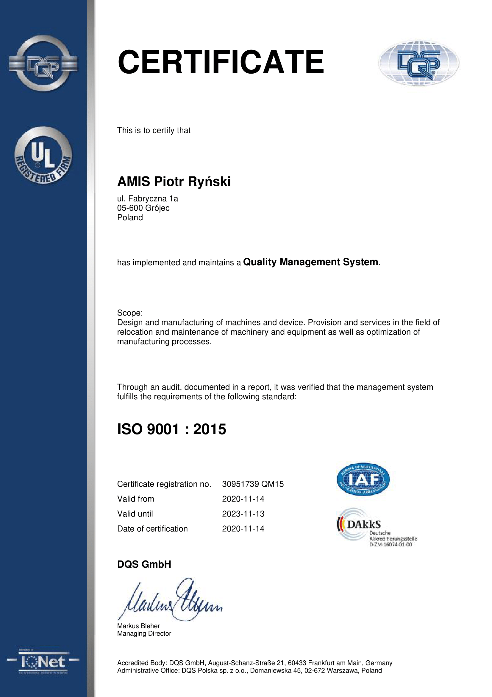

W tej zakładce pojawiać będą się dokumenty publiczne związane z systemem zarządzania jakością
Nasza firma wdrożyła oraz zwalidowała i system zarządzania jakością zgodnie z normą ISO 9001:2015 Od dnia 14 października otrzymaliśmy Certyfikat zgodności systemu zarządzania jakością DQS / IQ Net
